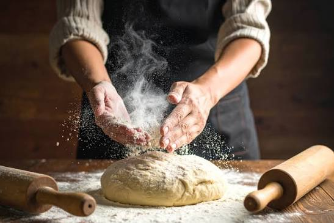
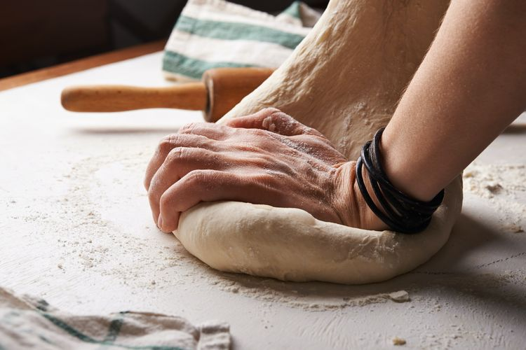
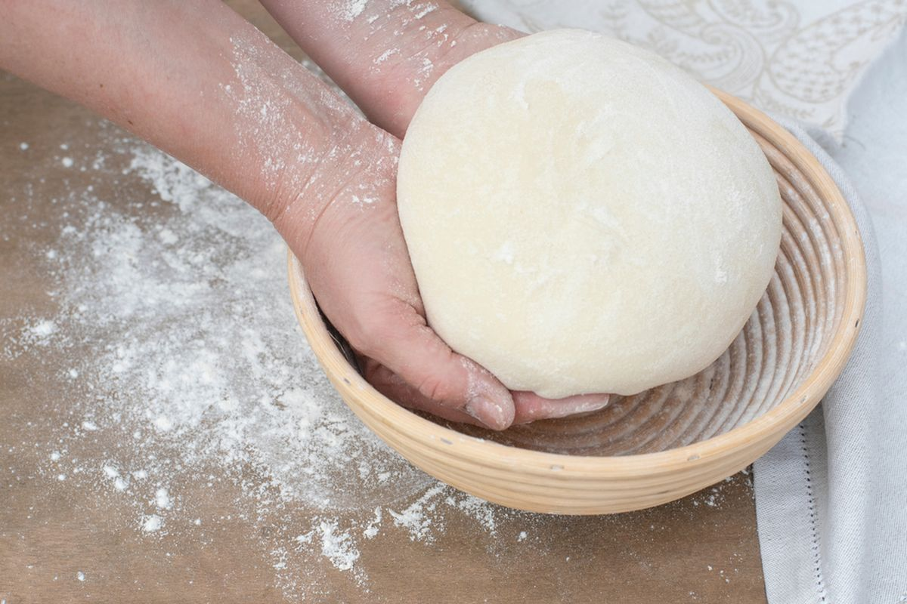
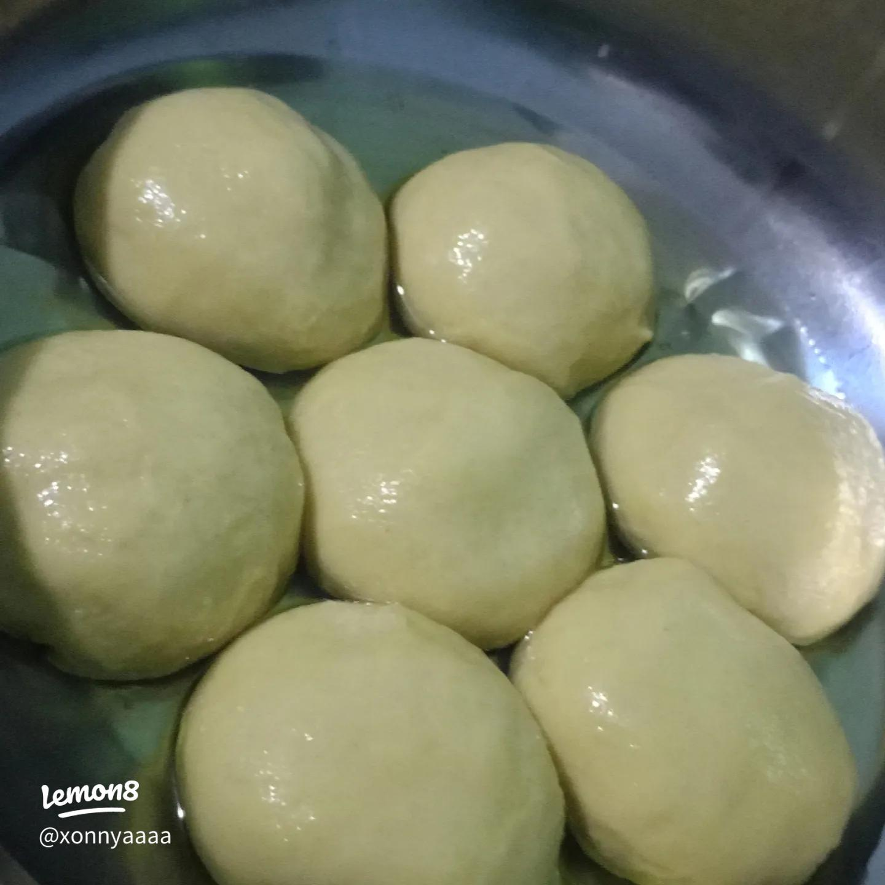

Uleni sampai kalis (aku pake tangan) jangan takut jika adonan lengket ya, lumuri tangan sekali-kali dgn tepung (tapi jangan menambahkan tepung) uleni terus sampai adonan kalis.


Kalisnya adonan camat tidak sekalis adonan roti ya kira-kira seperti ini sudah cukup.

Bagi adonan menjadi beberapa bulatan kecil, rendam minyak, lalu pipihkan tipis dan gulung memanjang hingga membentuk lingkaran/konde.

Pipihkan kembali adonan yang sudah digulung, lalu panggang di atas teflon dengan api kecil menggunakan sedikit margarin hingga cokelat keemasan.